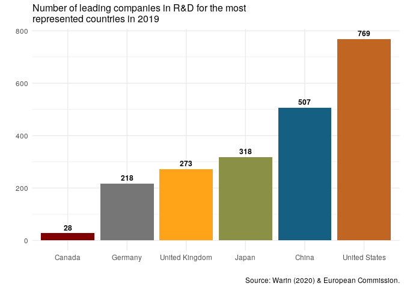

Overview
iriR’s objective is to provide an easy connection through the R language to the European Commission’s Industrial R&D Investment Scoreboard (IRI) while augmenting it in a couple of dimensions.
The yearly IRI Scoreboard for company-level data on innovation lists Research and Development investments made by the world’s 1,000 top investor companies. This scientific project is carried out within the Directorate B of Growth and Innovation, one of the seven scientific institutes of the European Commission’s Joint Research Centre (JRC).
The IRI Scoreboard aims at providing robust data and analyses on the contribution of private-sector R&D to sustainable competitiveness and “prosperity”. With iriR, we want to make the IRI Scoreboard’s data readily available. We have also compiled the yearly scoreboards through time to create a cross-section time-series dataset. Researchers and analysts have access to more than 7,500 innovative companies worldwide, which are or have been part of the top 1,000 innovative companies..
Through our R package, researchers and analysts can access the six parameters composing the global IRI scoreboard’s data on R&D: Country, Year, Company’s name, Industry, Indicator and Company’s rank.
To see a definition of the indicators, please visit this page. See below to access the whole list of indicators, industries, companies and countries.
For more information about the IRI Scoreboard, please visit this page.
Installation
Installation from CRAN using:
install.packages("iriR")You can install the latest development version of ‘iriR’ with remotes as follows:
install.packages("remotes")
remotes::install_github("warint/iriR")Then, test your installation with:
How-To
Step 1: Getting the country’s ISO code
A user needs to enter a country’s ISO code. To have access to this code, the following function provides this information:
irir_country() # A list of all countries will be produced
irir_country(country = "Canada") # The ISO code for Canada will be produced
irir_country("Canada") # The ISO code for Canada will be producedStep 2: Getting the indicator’s code
A user needs to enter the code of the desired indicator. To do so, the following function provides access to all the indicators of interest:
irir_indicator() # A list of all indicators will be produced
irir_indicator(indicators = "sales") # A list with all the variables including "sales" will be produced
irir_indicator("sales") # A list with all the variables including "sales" will be producedStep 3: Getting the company’ name
A user needs to enter the name of the desired company. To do so, the following function provides access to all the companies of interest:
irir_company() # A list of all companies will be produced
irir_company(company = "Samsung") # A list with all the variables including "Samsung" will be produced
irir_indicator("Samsung") # A list with all the variables including "Samsung" will be producedStep 4: Getting the industry’ name
A user needs to enter the name of the desired industry. To do so, the following function provides access to all the industries of interest:
irir_industry() # A list of all companies will be produced
irir_industry(industry = "Automobile") # A list with all the variables including "Automobile" will be produced
irir_industry("Automobile")# A list with all the variables including "Automobile" will be producedStep 5: Getting the data
Once the user knows all the arguments, s.he can collect the data in a very easy way through this function:
irir_data(country = "USA", years = "2018", indicators = "RD.euro", company = "FORD MOTOR", industry = "Automobiles & Parts", rank = 14) # It generates a data frame of the overall IRI data for American company "FORD MOTOR" in 2018.
irir_data(country=c("USA", "FRA"), years="2018",) # It generates a data frame of all the companies data from all the industries for the USA and France in 2018.
irir_data(years = "2018") # It generates a data frame of all the companies data for from all the industries for all the countries in 2018.
irir_data() # It generates a data frame of the complete datasetCreate visuals with irir_visual
irir_visual fonction allows to create three types of visuals from the IRI Scoreboard for data on innovation : barcharts, linecharts and pointcharts.
By default, graphs will illustrate the top 5 countries and Canada.
However, users can modify the graphs as they wish with these arguments:
Country
From the ISO codes provided by the irir_country() function, users can select which country they want to add to the top 5
If there is no country code but an empty argument, only the top 5 will appear.
Chart
- Each chart illustrates a different data from the IRI Scoreboard:
- bar_1 : Number of leading companies in R&D for the most represented countries,
- bar_2 : Number of leading companies in R&D per 100 billion $US of GDP for the most represented countries,
- bar_3 : R&D expenditures of the leading companies for the most represented countries,
- line_1 : Evolution of the number of leading companies in R&D for the most represented countries,
- line_2 : Evolution of the number of leading companies in R&D per 100 billion $US of GDP,
- line_3 : Evolution of R&D expenditures of the leading companies for the the most represented countries,
- line_4 : Evolution of the number of leading companies in R&D including their total R&D investments (in millions of $US)"),
- line_5 : Evolution of the percentage of R&D investments made by companies out of the overall sample’s total R&D investments,
- line_6 : Evolution of the R&D per employee in $US,
- point_1 : Net sales/R&D investment ratio per total R&D investments for the the most represented countries.
Years
- Choose which year will be used in the chart. If no year is set, the latest available will be used.
- It only works with barcharts
irir_visual(chart = "bar_1")
Cite ‘iriR’
@article{Warin2020,
author = "Thierry Warin",
title = "{iriR: An R Package for the EU Industrial R&D Investment Scoreboard}",
year = "2020",
month = "1",
url = "https://figshare.com/articles/iriR_Client_for_the_EU_Industrial_Research_and_Industry_Scoreboard/11774640",
doi = "10.6084/m9.figshare.11774640.v5"
}Acknowledgment of Source according to Creative Commons Attribution 4.0 International (CC BY 4.0) licence.
As it is stated, The European Commission’s reuse policy is implemented by the Commission Decision of 12 December 2011 on the reuse of Commission documents.
Unless otherwise indicated (e.g. in individual copyright notices), content and data owned by the EU is licensed under the Creative Commons Attribution 4.0 International (CC BY 4.0) licence.
Reuse is allowed, provided appropriate credit is given and changes are indicated.